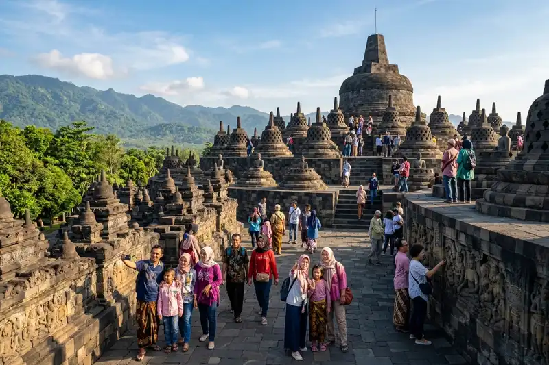

Sebagian audiens Jatim tetap membandingkan dengan wisata Jawa Tengah karena daerah tersebut memiliki ikon wisata yang sudah lama dikenal secara nasional maupun internasional, seperti Candi Borobudur dan kawasan Malioboro di Jogja.
Ringkasan Inti
- Wisata Jawa Tengah dan Jogja memiliki ikon destinasi yang sudah mapan dan dikenal luas sejak lama, seperti Candi Borobudur dan Malioboro.
- Data resmi menunjukkan jumlah kunjungan wisatawan ke Jawa Tengah mencapai puluhan juta pada 2024, mencerminkan skala popularitas destinasi di wilayah tersebut.
- Jogja memiliki citra kuat sebagai kota budaya dan pelajar yang melekat dalam benak wisatawan nusantara.
- Wisata Jawa Timur memiliki keragaman destinasi yang tidak kalah menarik, namun branding dan narasi promosinya belum semerata Jawa Tengah dan Jogja.
- Memahami alasan perbandingan ini dapat membantu pelaku pariwisata Jawa Timur menyusun strategi promosi yang lebih tepat sasaran.
1. Apa Itu Fenomena Perbandingan Wisata Antarwilayah?
Fenomena perbandingan wisata antarwilayah adalah kecenderungan audiens menilai daya tarik suatu daerah dengan menjadikan daerah lain yang lebih dikenal sebagai tolok ukur, seperti audiens Jatim yang membandingkan wisata daerahnya dengan Jawa Tengah dan Jogja.
Perbandingan semacam ini umum terjadi dalam industri pariwisata, terutama ketika suatu wilayah memiliki ikon destinasi yang sudah melekat kuat dalam ingatan kolektif masyarakat selama bertahun-tahun. Jawa Tengah dan Jogja termasuk wilayah yang telah lama membangun citra sebagai pusat wisata budaya dan sejarah di Pulau Jawa.
2. Mengapa Wisata Jawa Tengah dan Jogja Sering Dijadikan Acuan?
Wisata Jawa Tengah dan Jogja sering dijadikan acuan karena kedua wilayah ini memiliki ikon destinasi berskala nasional yang telah dikenal sejak lama, didukung oleh data kunjungan wisatawan yang konsisten tinggi.
Skala Kunjungan Wisatawan yang Besar
Skala kunjungan wisatawan yang besar di Jawa Tengah menjadi salah satu indikator mengapa wilayah ini sering dijadikan acuan dalam perbincangan wisata oleh audiens dari daerah lain, termasuk Jawa Timur.
Berdasarkan Buku Statistik Pariwisata Jawa Tengah Dalam Angka 2024 yang dipublikasikan Dinas Kepemudaan, Olahraga, dan Pariwisata Provinsi Jawa Tengah, jumlah kunjungan wisatawan ke daya tarik wisata Jawa Tengah pada 2024 tercatat sebanyak 69.480.726 kunjungan, terdiri dari 593.168 kunjungan wisatawan mancanegara dan 68.887.558 kunjungan wisatawan nusantara. Skala kunjungan sebesar ini turut membentuk persepsi bahwa Jawa Tengah merupakan salah satu tujuan wisata utama di Pulau Jawa.
Ikon Wisata yang Sudah Mapan
Ikon wisata yang sudah mapan seperti Candi Borobudur di Jawa Tengah dan kawasan Malioboro di Jogja menjadi daya tarik yang telah dikenal secara nasional maupun internasional selama puluhan tahun.
Sebagai gambaran skala popularitasnya, Candi Borobudur di Kabupaten Magelang, Jawa Tengah, ditargetkan mencapai 1,7 juta pengunjung pada 2025 menurut keterangan Direktur Taman Wisata Candi Borobudur. Ikon sekuat ini sulit ditandingi oleh destinasi baru yang belum memiliki rekam jejak sepanjang itu, termasuk sebagian destinasi di Jawa Timur yang sebenarnya juga memiliki potensi besar.
Citra Budaya yang Melekat pada Jogja
Citra budaya yang melekat pada Jogja sebagai kota pelajar sekaligus pusat kebudayaan Jawa turut memperkuat posisinya sebagai acuan wisata budaya di kalangan wisatawan nusantara.
Jogja dikenal luas dengan kombinasi wisata sejarah, seni pertunjukan, dan suasana kota yang khas, sehingga sering menjadi rujukan ketika audiens membandingkan pengalaman wisata budaya di daerah lain, termasuk Jawa Timur yang sebenarnya juga memiliki kekayaan budaya tersendiri.

3. Apa Keunggulan Wisata Jawa Timur yang Perlu Lebih Ditonjolkan?
Keunggulan wisata Jawa Timur yang perlu lebih ditonjolkan meliputi keragaman destinasi alam, budaya, dan religi yang tersebar di berbagai daerah, mulai dari pegunungan hingga pesisir.
Beberapa keunggulan yang dimiliki wisata Jawa Timur:
- Keragaman bentang alam, mulai dari kawasan pegunungan seperti Bromo hingga pantai-pantai di kawasan selatan Jawa Timur.
- Kekayaan budaya lokal yang tersebar di berbagai kabupaten dan kota dengan karakter khas masing-masing daerah.
- Destinasi wisata religi yang tersebar luas dan menjadi bagian penting dari perjalanan wisata ziarah di Pulau Jawa.
- Potensi wisata kuliner yang beragam dan mencerminkan kekayaan budaya lokal Jawa Timur.
4. Bagaimana Persepsi Perbandingan Ini Memengaruhi Strategi Promosi Wisata Daerah?
Persepsi perbandingan ini memengaruhi strategi promosi wisata daerah karena pelaku pariwisata Jawa Timur perlu menyusun narasi promosi yang menonjolkan keunikan lokal, bukan sekadar menyamai citra Jawa Tengah maupun Jogja.
Alih-alih berusaha meniru pola promosi Jawa Tengah atau Jogja, pendekatan yang lebih efektif adalah membangun narasi yang menonjolkan karakter khas wisata Jawa Timur, seperti keragaman geografis dan budaya lokal yang tidak dimiliki daerah lain dengan cara yang sama.
5. Apa Kesalahan Umum dalam Menanggapi Perbandingan Wisata Antarwilayah?
Kesalahan umum dalam menanggapi perbandingan wisata antarwilayah adalah berusaha menyamai citra daerah lain secara langsung tanpa memperkuat identitas dan keunikan destinasi sendiri terlebih dahulu.
Beberapa kesalahan lain yang perlu dihindari:
- Membandingkan destinasi secara langsung tanpa mempertimbangkan konteks sejarah dan waktu pembentukan citra masing-masing daerah.
- Mengabaikan potensi lokal yang unik demi meniru pola promosi daerah lain yang sudah lebih dulu dikenal.
- Tidak memanfaatkan data kunjungan dan preferensi wisatawan secara maksimal dalam menyusun strategi promosi.
6. Bagaimana Cara Membangun Daya Saing Wisata Jawa Timur Tanpa Sekadar Membandingkan?
Cara membangun daya saing wisata Jawa Timur tanpa sekadar membandingkan adalah dengan fokus memperkuat narasi unik daerah, meningkatkan kualitas layanan, dan memanfaatkan promosi digital secara konsisten.
Beberapa langkah yang dapat diterapkan:
- Identifikasi keunikan lokal yang tidak dimiliki daerah lain sebagai fondasi narasi promosi.
- Tingkatkan kualitas layanan dan infrastruktur di destinasi wisata agar pengalaman wisatawan tetap positif.
- Manfaatkan promosi digital secara konsisten untuk memperkenalkan destinasi kepada audiens yang lebih luas.
- Bangun kolaborasi lintas daerah untuk memperluas jangkauan promosi tanpa harus bersaing secara langsung dengan daerah lain.
Perbandingan audiens Jatim dengan wisata Jawa Tengah dan Jogja umumnya dipengaruhi oleh skala kunjungan dan citra ikon destinasi yang sudah lama terbentuk di kedua wilayah tersebut. Wisata Jawa Timur sebenarnya memiliki keragaman destinasi yang tidak kalah menarik, sehingga strategi promosi sebaiknya difokuskan pada penguatan identitas lokal dibandingkan sekadar meniru pola daerah lain. Untuk memahami lebih dalam mengenai daya tarik masing-masing wilayah, silakan simak pembahasan mengenai daya tarik wisata Jogja yang sering jadi acuan, ciri khas wisata Jawa Tengah dibandingkan Jawa Timur, serta strategi promosi wisata Jawa Timur agar tidak kalah saing.
7. FAQ Seputar Perbandingan Wisata Jatim, Jateng, dan Jogja
Abiyyu
Seorang penulis artikel yang sudah berpengalaman di dalam dunia wisata outbound Batu Malang.